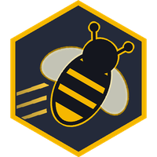

Beenetic StudiosAnswers to the most common questions, and how to reach us when they are not enough.
Email support@beeneticstudios.com. Tell us which game, what you were doing, and what happened. If the game is running, sending a problem report (below) gives us the details we need to help. We usually reply within a few days.
Sign in with Google Play Games. Tap your avatar at the top of the screen, then Google Play Games. Once you are signed in, your progress is linked to your Play Games profile.
On a new phone or after a reinstall, sign in with the same Play Games profile and the game offers to load your saved progress.
Without Play Games, your progress belongs to that one install. Uninstalling the game or clearing its data starts a fresh account, and the old progress cannot be brought back.
Nothing is lost when sign-in fails: your progress on the phone is safe. Check that you are online, then try again from your avatar at the top of the screen, then Google Play Games.
If you skipped the Play Games prompt when you first opened the game, you can sign in later from the same place.
vs Computer, puzzles, and lessons work without a connection. Online games need one.
Still stuck? Send a problem report (next question) so we can see what went wrong.
In the game, tap your avatar, then Settings. Under Support, tap Report a Problem. Your phone's share sheet opens with your recent game log attached. Send it to support@beeneticstudios.com and add a line about what happened.
The log helps us find the cause. It holds technical details about the game and your device, and your player ID.
Tap the other player's nameplate in a game, or their game in your list, to open their player card. Then choose Report Player or Block Player. You need to be online. Players you have blocked are listed in Settings, under Account, then Blocked Players.
In the game, tap your avatar, then Settings. Under Account, tap Delete Account. This is immediate and cannot be undone.
No longer have the phone? You can ask by email instead. Both routes are explained on the Delete Your Account page.
Not yet. Android comes first, and an iPhone version will follow.